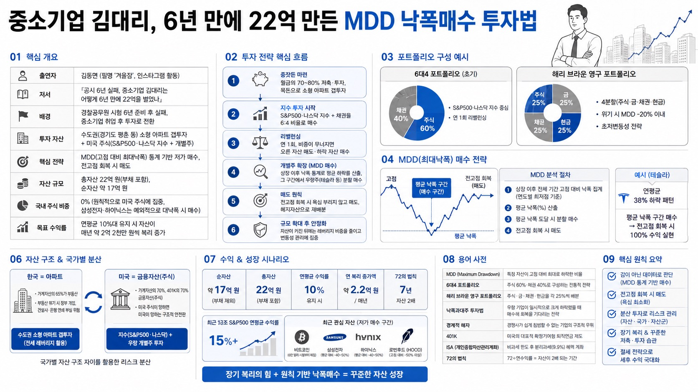

전인구경제연구소MORNING DIGEST · 2026-08-27 · 전인구경제연구소🎬 영상
중소기업 김대리, 6년 만에 22억 만든 MDD 낙폭매수 투자법

01핵심 개요 (표)
항목
내용
출연자
김동면(필명 '겨울잠', 인스타그램 활동)
저서
『공시 6년 실패, 중소기업 김대리는 어떻게 6년 만에 22억을 벌었나』
배경
경찰공무원 시험 6년 준비 후 실패, 중소기업 취업 후 투자로 전환
투자 자산
수도권(경기도 평촌 등) 소형 아파트 갭투자 + 미국 주식(S&P500·나스닥 지수 + 개별주)
핵심 전략
MDD(고점 대비 최대낙폭) 통계 기반 저가 매수, 전고점 회복 시 매도
자산 규모
총자산 22억 원(부채 포함), 순자산 약 17억 원
국내 주식 비중
0%(원칙적으로 미국 주식에 집중, 삼성전자·하이닉스는 예외적으로 대낙폭 시 매수)
목표 수익률
연평균 10%대 유지 시 자산이 매년 약 2억 2천만 원씩 복리 증가
02핵심 기능/내용 구조
투자 계기: 경찰공무원 시험에 6년을 투자했으나 실패하고 중소기업에 취업, "뒤처진 6년을 극복하려면 투자로 부자가 돼야 한다"는 결심으로 본격 투자를 시작했다(00:00 근처, 서두 자기소개).
초기 자본 형성: 주식이 아직 대중적이지 않던 시기 2년간 5천만 원을 저축해 대출을 더해 수도권 소형 아파트에 먼저 투자했다. 서울 아파트 매매가 연평균 6%, 전세가 연평균 5% 상승이라는 통계를 근거로 삼았다.
아파트 갭투자 확장 전략: 아파트를 매입 후 거주하지 않고 전세를 놓아, 2년마다 전세금 인상분을 주식 투자 재원으로 활용했다. 주식 수익이 커지면 다시 아파트를 매수하는 방식을 반복해 3채 이상으로 자산을 불렸다(08:00 근처, 노트 필기 관련 대화).
미국 주식 올인 이유: 한국은 가계자산의 65%가 부동산에 쏠려 있어 부동산 위기 시 정부 개입과 건설사·은행 연쇄 부실로 이어질 수 있다고 판단했다. 반면 미국은 가계자산의 70%, 401K 연금자산의 70%가 금융자산(주식)이어서 "미국 주식이 망하면 미국이 망한다"는 구조적 안전판이 있다고 보고 한국=아파트, 미국=주식으로 자산을 분리했다.
MDD(최대낙폭) 매수 전략: 삼성전자·하이닉스·테슬라 등 개별 종목의 2000년대 이후 연도별 고점 대비 하락률을 전수 통계로 산출해 평균 하락률을 구하고, 그 지점에 도달하면 분할 매수했다. 테슬라는 연평균 38% 하락하는 패턴이 있어 그 지점에서 매수해 전고점 회복 시 100% 수익을 내는 방식을 반복했다.
포트폴리오·리밸런싱: 초기에는 주식 60%(S&P500·나스닥)·채권 40%의 '6대4 포트폴리오'로 시작해 연 1회 리밸런싱(오른 자산 매도, 하락 자산 매수)했다. 이후 자산이 커지며 채권·금 등 헤지자산 비중은 정리하고 최근에는 비트코인·삼성전자·하이닉스·로빈후드(HOOD) 등의 대낙폭 구간을 매수했다(20:15 근처, 해리 브라운 영구 포트폴리오 언급).
매도 타이밍과 레버리지 활용: 매도는 욕심내지 않고 전고점을 회복하면 바로 정리하는 원칙을 지킨다. 테슬라 같은 고변동성 종목이 40% 이상 하락한 테일 이벤트 구간에서는 2배 레버리지 상품(TSLL 등)을 소액 매수해 회복 시 수익을 극대화하기도 했다.
03기술적 맥락
MDD(Maximum Drawdown, 최대낙폭) 분석: 특정 종목의 상장 이후 전체 기간 동안 고점 대비 최저점까지의 하락률을 연도별로 집계해 평균값을 구하고, 이를 매수 판단 기준선으로 삼는 정량적 방법론이다.
6대4 포트폴리오 / 해리 브라운 영구 포트폴리오: 기관 투자 전략인 주식 60%·채권 40% 배분과, 더 보수적인 주식 25%·금 25%·채권 25%·현금 25%의 4분할(영구 포트폴리오) 방식을 비교해 설명한다. 영구 포트폴리오는 위기 상황에서도 MDD가 -20%를 넘지 않는 안정성이 특징이다.
일시 투자(Lump Sum) vs 분할 매수(DCA): 닉 매기울리(Nick Maggiulli)의 저서 『Just Keep Buying』을 인용해, 통계상 일시 투자가 75% 확률로 분할 매수보다 성과가 좋다고 설명하되, 나머지 25% 확률(매수 직후 폭락)에 대비해 포트폴리오 분산이 필요하다고 강조한다.
04전략적 의미
한국-부동산, 미국-금융자산이라는 국가별 자산 구조 차이를 활용해 리스크를 지역적으로 분산한 점이 특징이다. 또한 감(직관)이 아니라 상장 이후 전체 기간의 낙폭 데이터를 계량화해 매수 시점을 기계적으로 판단함으로써, 하락장에서 오는 공포심에 흔들리지 않고 우량주를 저가에 매집할 수 있었다는 점이 일반 투자자에게 주는 시사점이다. 다만 이 전략은 "절대 망하지 않을 것"이라는 확신이 서는 초대형 우량주(M7 등)에만 선별 적용해야 하며, 나이키처럼 브랜드력은 있지만 실적이 무너진 종목은 낙폭이 75%까지 확대될 수 있어 시가총액 상위권 여부를 추가 필터로 삼아야 한다는 경고도 함께 제시된다.
05핵심 워크플로우 또는 비교표
단계
내용
1. 종잣돈 마련
월급의 70~80% 저축·투자, 목돈으로 소형 아파트 갭투자
2. 지수 투자 시작
S&P500·나스닥 지수 + 채권을 6:4 비율로 매수
3. 리밸런싱
연 1회, 비중이 무너지면 오른 자산 매도·하락 자산 매수
4. 개별주 확장
MDD 통계로 평균 하락률 산출 후 그 구간에서 우량주(테슬라 등) 분할 매수
5. 매도
전고점 회복 시 욕심 부리지 않고 매도, 헤지자산으로 재배분
6. 규모 확대 후 안정화
자산이 커진 뒤에는 레버리지 비중을 줄이고 변동성 관리에 집중
06활용 시나리오
초보 투자자의 시작점: 개별주 낙폭 판단이 아직 익숙하지 않다면 먼저 S&P500·나스닥 지수와 채권을 6:4 또는 해리 브라운 영구 포트폴리오(4분할)로 구성해 MDD를 심리적으로 감당 가능한 수준(-20% 이내)으로 낮추고 시작할 수 있다.
하락장 대응 매뉴얼: 보유 종목이 상장 이후 평균 낙폭 구간에 진입하면 공포에 팔기보다 헤지자산(채권·금)을 매도해 오히려 추가 매수 재원으로 활용하는 역발상 대응이 가능하다.
부동산-주식 자산 분리 전략: 국내 자산은 실거주·전세 레버리지형 소형 아파트로, 해외 자산은 지수·우량 개별주로 분리해 국가별 리스크를 헤지하는 포트폴리오 설계에 참고할 수 있다.
세후 수익 극대화: 미국 주식 양도차익에 대한 22% 세율 부담을 배우자 증여(6억까지 비과세, 1년 후 매도 시 취득가 재산정)나 ISA 계좌(비과세 250만 원 초과분 9.9% 분리과세) 활용으로 낮추는 절세 설계에 활용할 수 있다.
07현황 및 전망
현재 부채를 제외한 순자산은 약 17억 원이며, 연평균 수익률 10%만 유지해도 자산이 매년 약 2억 2천만 원씩 늘어나는 구조를 만들었다고 설명한다.
'72의 법칙'(72÷연수익률=자산이 2배 되는 연수)을 근거로, 연 10% 수익 시 약 7년마다 자산이 2배가 된다는 점을 투자 동기부여 근거로 제시한다.
최근 10년간 S&P500 연평균 수익률은 15%를 넘어, 장기 평균치(10%)보다 실제 성과가 더 좋았던 구간이라고 언급한다.
최근에는 비트코인(6만 달러 시절부터 매집), 삼성전자·하이닉스(평균 대비 40~50% 낙폭 구간), 로빈후드(HOOD, 고점 대비 50% 이상 하락 구간)를 저가 매수 대상으로 지목했다.
자산 규모가 커지면서 하락 시 절대 손실액(수천만 원 단위)이 커진 만큼, 향후에는 레버리지 비중을 줄이고 전체 포트폴리오를 더 안정적으로 운용할 계획이라고 밝혔다.